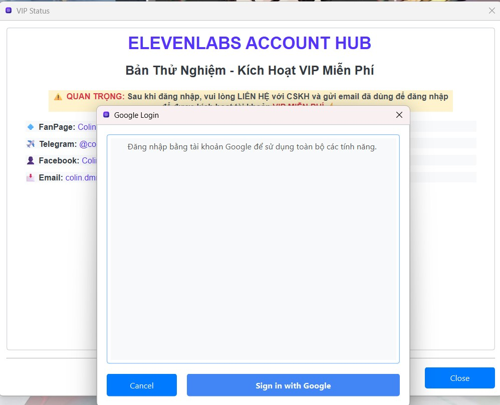

Cài đặt và Khởi động Phần mềm
Tải xuống và Cài đặt
Phần mềm ElevenLabs Account Hub được cung cấp dưới dạng tệp thực thi (.exe) cho Windows, giúp bạn dễ dàng cài đặt và sử dụng mà không cần các bước cấu hình phức tạp.
- Truy cập liên kết tải xuống được cung cấp (thường là trên trang chủ hoặc qua thông báo từ nhà phát triển).
- Tải tệp .exe về máy tính của bạn.
- Do phần mềm chưa được ký số chính thức, Windows Defender hoặc các trình duyệt có thể hiển thị cảnh báo. Bạn có thể cần chọn "Keep" hoặc "Run anyway" để tiếp tục.
Mẹo: Nếu gặp khó khăn khi tải hoặc chạy tệp, bạn có thể tạm thời tắt Windows Defender SmartScreen hoặc thêm tệp vào danh sách loại trừ của phần mềm diệt virus. Tuy nhiên, hãy đảm bảo bạn tải tệp từ nguồn tin cậy.
- Sau khi tải xong, bạn có thể chạy trực tiếp tệp .exe này. Không cần quá trình cài đặt phức tạp, phần mềm sẽ khởi chạy ngay.
Chúng tôi khuyến khích bạn tạo một thư mục riêng cho phần mềm (ví dụ: "ElevenLabs Hub") và đặt tệp .exe vào đó để dễ quản lý.
Khởi động Lần đầu và Đăng nhập
Khi bạn chạy phần mềm lần đầu tiên, bạn sẽ được yêu cầu đăng nhập để có thể sử dụng các tính năng.
- Nhấp đúp vào tệp
ElevenLabs_Account_Hub.exe(hoặc tên tệp tương tự) để khởi chạy phần mềm. - Một cửa sổ thông báo yêu cầu đăng nhập có thể xuất hiện. Nhấn "OK" hoặc nút tương tự để tiếp tục.
- Cửa sổ Đăng nhập sẽ hiển thị. Nhấn vào nút "Đăng nhập bằng Google".  (Hình ảnh minh họa cho hộp thoại đăng nhập)
- Trình duyệt web mặc định của bạn sẽ mở ra, chuyển đến trang đăng nhập của Google.
- Chọn tài khoản Google bạn muốn sử dụng và hoàn tất quá trình đăng nhập trên trình duyệt.
- Sau khi đăng nhập thành công trên trình duyệt, bạn có thể đóng tab đó và quay lại ứng dụng ElevenLabs Account Hub.
- Ứng dụng sẽ tự động nhận diện bạn đã đăng nhập thành công. Thông tin email của bạn sẽ xuất hiện trên thanh trạng thái ở góc dưới cửa sổ chính.
Lưu ý quan trọng: Để kích hoạt đầy đủ các tính năng (VIP), sau khi đăng nhập lần đầu, bạn cần liên hệ với nhà phát triển (ví dụ: qua Telegram hoặc Email được cung cấp) để yêu cầu kích hoạt tài khoản VIP cho email bạn đã dùng để đăng nhập.
Cập nhật Phần mềm
Để cập nhật lên phiên bản mới nhất của ElevenLabs Account Hub:
- Theo dõi thông báo từ nhà phát triển về các bản cập nhật mới (thường qua các kênh liên lạc như Telegram, Facebook).
- Tải xuống tệp .exe của phiên bản mới từ liên kết được cung cấp.
- Thoát hoàn toàn phiên bản cũ của phần mềm đang chạy (nếu có).
- Thay thế tệp .exe cũ bằng tệp .exe mới vừa tải về.
- Chạy tệp .exe mới. Dữ liệu và cài đặt của bạn thường sẽ được giữ nguyên.
Mẹo: Nên sao lưu dữ liệu của phần mềm trước khi cập nhật để đảm bảo an toàn. Xem mục Sao lưu Dữ liệu.